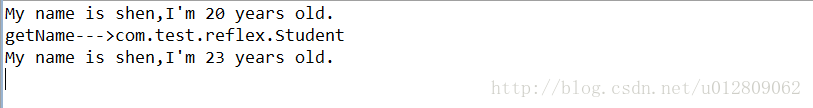
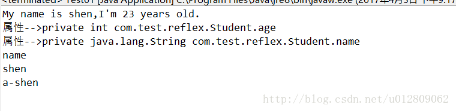
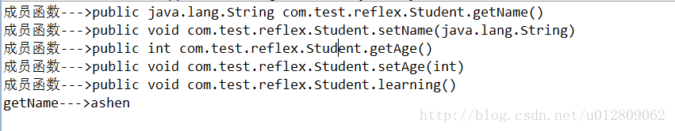

<!DOCTYPE html>
<html>
  <!DOCTYPE html>
<html lang="zh-CN">
<head><meta name="generator" content="Hexo 3.9.0">
  <meta http-equiv="content-type" content="text/html; charset=utf-8">
  <meta http-equiv="X-UA-Compatible" content="IE=Edge,chrome=1">
  
  <title>反射 - zgshen&#39;s note</title>
  <meta name="viewport" content="width=device-width, initial-scale=1.0, maximum-scale=1.0, user-scalable=0">
  
  <meta name="keywords" content="Java基础">
  
  
    <link rel="shortcut icon" type="image/x-icon" href="/favicon.ico?v=1.02">
  
  
    <link rel="alternate" href="/atom.xml " title="zgshen&#39;s note" type="application/atom+xml">
  

  <link rel="stylesheet" href="/css/style.css">
</head></html>
  <body>
    <div class="container">
      <header class="header">
  <div class="blog-title">
    <a href="/" class="logo">zgshen&#39;s note</a>
    <div class="subtitle"></div>
  </div>
  <nav class="navbar">
    <ul class="menu">
      
        <li class="menu-item">
          <a href="/" class="menu-item-link">主页</a>
        </li>
      
        <li class="menu-item">
          <a href="/about" class="menu-item-link">关于</a>
        </li>
      
        <li class="menu-item">
          <a href="https://www.google.com/search?q=site:zguishen.com/" class="menu-item-link">搜索</a>
        </li>
      
    </ul>
  </nav>
</header>
<article class="post">
  <div class="post-title">
    <h1 class="article-title">反射</h1>
  </div>
   <div class="post-meta">
    <span class="post-time">2017-04-04</span>
  </div>
  <div class="post-content">
    <blockquote>
<p>相信大家经常听说某些框架设计用到了反射机制啥啥，但自己对此概念却了解甚少，虽然一般开发不会用到，但还是有必要知道反射的基本原理和操作。</p>
</blockquote>
<p>  使用反射，可以做到：</p>
<ul>
<li>在运行中分析类的能力。</li>
<li>在运行中查看对象，例如，编写一个toString方法供所有类使用。</li>
<li>实现数组的操作代码。</li>
<li>利用Method对象，这个对象很像C++中的函数指针。</li>
</ul>
<p>反射操作主要用到的类有Class（类）、Field（属性）、Method（成员函数）、Constructor（构造）和Modifier（修饰符）<br><a id="more"></a><br>一、反射获取类</p>
<p>新建一个Student类<br><figure class="highlight java"><table><tr><td class="gutter"><pre><span class="line">1</span><br><span class="line">2</span><br><span class="line">3</span><br><span class="line">4</span><br><span class="line">5</span><br><span class="line">6</span><br><span class="line">7</span><br><span class="line">8</span><br><span class="line">9</span><br><span class="line">10</span><br><span class="line">11</span><br><span class="line">12</span><br><span class="line">13</span><br><span class="line">14</span><br><span class="line">15</span><br><span class="line">16</span><br><span class="line">17</span><br><span class="line">18</span><br><span class="line">19</span><br><span class="line">20</span><br><span class="line">21</span><br><span class="line">22</span><br><span class="line">23</span><br><span class="line">24</span><br><span class="line">25</span><br><span class="line">26</span><br><span class="line">27</span><br><span class="line">28</span><br><span class="line">29</span><br><span class="line">30</span><br><span class="line">31</span><br><span class="line">32</span><br><span class="line">33</span><br><span class="line">34</span><br><span class="line">35</span><br><span class="line">36</span><br></pre></td><td class="code"><pre><span class="line"><span class="keyword">public</span> <span class="class"><span class="keyword">class</span> <span class="title">Student</span> </span>&#123;</span><br><span class="line"></span><br><span class="line">	<span class="keyword">private</span> <span class="keyword">int</span> age;</span><br><span class="line">	<span class="keyword">private</span> String name;</span><br><span class="line">	</span><br><span class="line">	<span class="comment">//无参构造</span></span><br><span class="line">	<span class="function"><span class="keyword">public</span> <span class="title">Student</span><span class="params">()</span> </span>&#123;</span><br><span class="line">		</span><br><span class="line">	&#125;</span><br><span class="line">	</span><br><span class="line">	<span class="comment">//有参构造</span></span><br><span class="line">	<span class="function"><span class="keyword">public</span> <span class="title">Student</span><span class="params">(<span class="keyword">int</span> age, String name)</span></span>&#123;</span><br><span class="line">		<span class="keyword">this</span>.age = age;</span><br><span class="line">		<span class="keyword">this</span>.name = name;</span><br><span class="line">		System.out.println(<span class="string">"My name is "</span>+name+<span class="string">",I'm "</span>+age+<span class="string">" years old."</span>);</span><br><span class="line">	&#125;</span><br><span class="line">	</span><br><span class="line">	<span class="function"><span class="keyword">public</span> <span class="keyword">void</span> <span class="title">setAge</span><span class="params">(<span class="keyword">int</span> age)</span> </span>&#123;</span><br><span class="line">		<span class="keyword">this</span>.age = age;</span><br><span class="line">	&#125;</span><br><span class="line">	<span class="function"><span class="keyword">public</span> <span class="keyword">void</span> <span class="title">setName</span><span class="params">(String name)</span> </span>&#123;</span><br><span class="line">		<span class="keyword">this</span>.name = name;</span><br><span class="line">	&#125;</span><br><span class="line">	</span><br><span class="line">	<span class="function"><span class="keyword">public</span> <span class="keyword">int</span> <span class="title">getAge</span><span class="params">()</span> </span>&#123;</span><br><span class="line">		<span class="keyword">return</span> age;</span><br><span class="line">	&#125;</span><br><span class="line">	<span class="function"><span class="keyword">public</span> String <span class="title">getName</span><span class="params">()</span> </span>&#123;</span><br><span class="line">		<span class="keyword">return</span> name;</span><br><span class="line">	&#125;</span><br><span class="line">	</span><br><span class="line">	<span class="function"><span class="keyword">public</span> <span class="keyword">void</span> <span class="title">learning</span><span class="params">()</span> </span>&#123;</span><br><span class="line">		System.out.println(<span class="string">"learning..."</span>);</span><br><span class="line">	&#125;</span><br><span class="line">	</span><br><span class="line">&#125;</span><br></pre></td></tr></table></figure></p>
<p>测试类<br><figure class="highlight plain"><table><tr><td class="gutter"><pre><span class="line">1</span><br><span class="line">2</span><br><span class="line">3</span><br><span class="line">4</span><br><span class="line">5</span><br><span class="line">6</span><br><span class="line">7</span><br><span class="line">8</span><br><span class="line">9</span><br><span class="line">10</span><br><span class="line">11</span><br><span class="line">12</span><br><span class="line">13</span><br><span class="line">14</span><br><span class="line">15</span><br><span class="line">16</span><br><span class="line">17</span><br><span class="line">18</span><br><span class="line">19</span><br><span class="line">20</span><br><span class="line">21</span><br><span class="line">22</span><br><span class="line">23</span><br></pre></td><td class="code"><pre><span class="line">public class ReflexTest &#123;</span><br><span class="line">	public static void main(String[] args) throws ClassNotFoundException &#123;</span><br><span class="line">		Student student = new Student(20, &quot;shen&quot;);//一般创建对象</span><br><span class="line">		</span><br><span class="line">		Class stu = Class.forName(&quot;com.test.reflex.Student&quot;);//通过Class获取指定类的完整结构</span><br><span class="line">		System.out.println(&quot;getName---&gt;&quot;+stu.getName());</span><br><span class="line">		</span><br><span class="line">		Student s = null;</span><br><span class="line">		Student s1 = null; </span><br><span class="line">		try &#123;</span><br><span class="line">			s = (Student)stu.newInstance();//默认构造的是无参构造，若存在有参构造，这里将报错</span><br><span class="line">			</span><br><span class="line">			Constructor constructor = stu.getConstructor(int.class, String.class);//获取有参构造,已知确定参数</span><br><span class="line">			s1 = (Student)constructor.newInstance(23, &quot;shen&quot;);//有参构造</span><br><span class="line">			</span><br><span class="line">			Constructor[] constructors = stu.getConstructors();//所有构造</span><br><span class="line">			s1 = (Student)constructors[0].newInstance();//第一个构造(无参那个)</span><br><span class="line">		&#125; catch (Exception e) &#123;</span><br><span class="line">			e.printStackTrace();</span><br><span class="line">		&#125;</span><br><span class="line">		</span><br><span class="line">	&#125;</span><br><span class="line">&#125;</span><br></pre></td></tr></table></figure></p>
<p>输出：<br><br>Class类forName方法通过完整包路径类型来实例化Class对象，再通过Class对象获取Student类实例；<br>再使用newInstance()创建对象，这里要注意Student的构造方法，默认使用的试试无参构造，可使用Constructor类操作构造方法。</p>
<p>二、获取类的基本结构</p>
<p>1、使用反射操作对象属性<br><figure class="highlight plain"><table><tr><td class="gutter"><pre><span class="line">1</span><br><span class="line">2</span><br><span class="line">3</span><br><span class="line">4</span><br><span class="line">5</span><br><span class="line">6</span><br><span class="line">7</span><br><span class="line">8</span><br><span class="line">9</span><br><span class="line">10</span><br><span class="line">11</span><br><span class="line">12</span><br><span class="line">13</span><br><span class="line">14</span><br><span class="line">15</span><br><span class="line">16</span><br><span class="line">17</span><br><span class="line">18</span><br><span class="line">19</span><br><span class="line">20</span><br><span class="line">21</span><br><span class="line">22</span><br><span class="line">23</span><br><span class="line">24</span><br><span class="line">25</span><br><span class="line">26</span><br><span class="line">27</span><br><span class="line">28</span><br></pre></td><td class="code"><pre><span class="line">public class Test01 &#123;</span><br><span class="line">	public static void main(String[] args) throws Exception, Exception &#123;</span><br><span class="line">		try &#123;</span><br><span class="line">			Class stu = Class.forName(&quot;com.test.reflex.Student&quot;);</span><br><span class="line">			</span><br><span class="line">			Constructor constructor = stu.getConstructor(int.class, String.class);//获取有参构造,已知确定参数</span><br><span class="line">			Student s = (Student)constructor.newInstance(23, &quot;shen&quot;);//有参构造</span><br><span class="line">			</span><br><span class="line">			//Field[] fields = stu.getFields();//获取public的属性</span><br><span class="line">			Field[] fields = stu.getDeclaredFields();//获取所有属性</span><br><span class="line">			for(Field field : fields)&#123;</span><br><span class="line">				System.out.println(&quot;属性--&gt;&quot;+field);</span><br><span class="line">			&#125;</span><br><span class="line">			</span><br><span class="line">			Field fieldName = stu.getDeclaredField(&quot;name&quot;);//获取私有变量name</span><br><span class="line">			fieldName.setAccessible(true);</span><br><span class="line">			System.out.println(fieldName.getName());//私有属性名称</span><br><span class="line">			System.out.println(fieldName.get(s));//私有属性值</span><br><span class="line">			</span><br><span class="line">			fieldName.set(s, &quot;a-shen&quot;);</span><br><span class="line">			System.out.println(fieldName.get(s));//改变私有属性值</span><br><span class="line">			</span><br><span class="line">		&#125; catch (ClassNotFoundException e) &#123;</span><br><span class="line">			e.printStackTrace();</span><br><span class="line">		&#125;</span><br><span class="line">		</span><br><span class="line">	&#125;</span><br><span class="line">&#125;</span><br></pre></td></tr></table></figure></p>
<p>结果输出<br></p>
<p>其中对于fieldName.setAccessible(true);使用java反射获取类的属性值时，如果该属性被声明为private 的，需要将setAccessible设置为true. 默认的值为false</p>
<p>2、使用反射访问成员函数<br>通过反射调用方法，使用invoke方法</p>
<figure class="highlight plain"><table><tr><td class="gutter"><pre><span class="line">1</span><br><span class="line">2</span><br><span class="line">3</span><br><span class="line">4</span><br><span class="line">5</span><br><span class="line">6</span><br><span class="line">7</span><br><span class="line">8</span><br><span class="line">9</span><br><span class="line">10</span><br><span class="line">11</span><br><span class="line">12</span><br><span class="line">13</span><br><span class="line">14</span><br><span class="line">15</span><br><span class="line">16</span><br><span class="line">17</span><br><span class="line">18</span><br><span class="line">19</span><br><span class="line">20</span><br><span class="line">21</span><br><span class="line">22</span><br><span class="line">23</span><br><span class="line">24</span><br><span class="line">25</span><br><span class="line">26</span><br><span class="line">27</span><br><span class="line">28</span><br></pre></td><td class="code"><pre><span class="line">public class Test02 &#123;</span><br><span class="line">	public static void main(String[] args) throws Exception, Exception &#123;</span><br><span class="line">		try &#123;</span><br><span class="line">			Class stu = Class.forName(&quot;com.test.reflex.Student&quot;);</span><br><span class="line">			</span><br><span class="line">			Constructor constructor = stu.getConstructor(int.class, String.class);//获取有参构造,已知确定参数</span><br><span class="line">			Constructor[] constructors = stu.getConstructors();</span><br><span class="line">			Student s = (Student)constructors[0].newInstance();//无参构造对象</span><br><span class="line">			</span><br><span class="line">			//Method[] methods = stu.getMethods();//获取类所有方法，包括继承自父类和实现接口的方法</span><br><span class="line">			Method[] methods = stu.getDeclaredMethods();//获取类本身各类方法和实现接口的方法及重写的方法，不包括继承的方法</span><br><span class="line">			for(Method method : methods)&#123;</span><br><span class="line">				System.out.println(&quot;成员函数---&gt;&quot;+method);</span><br><span class="line">			&#125;</span><br><span class="line">			</span><br><span class="line">			Method m1 = s.getClass().getMethod(&quot;setName&quot;, String.class);</span><br><span class="line">			m1.invoke(s, &quot;ashen&quot;);//设置name值为&quot;ashen&quot;</span><br><span class="line">			</span><br><span class="line">			Method m2 = s.getClass().getMethod(&quot;getName&quot;);</span><br><span class="line">			String name = (String) m2.invoke(s);</span><br><span class="line">			System.out.println(&quot;getName---&gt;&quot;+name);//输出name值</span><br><span class="line">			</span><br><span class="line">		&#125;catch (ClassNotFoundException e) &#123;</span><br><span class="line">			e.printStackTrace();</span><br><span class="line">		&#125;</span><br><span class="line">		</span><br><span class="line">	&#125;</span><br><span class="line">&#125;</span><br></pre></td></tr></table></figure>
<p>结果输出<br></p>

  </div>
  <div class="post-footer">
    
      <ul class="post-tag-list"><li class="post-tag-list-item"><a class="post-tag-list-link" href="/tags/Java基础/">Java基础</a></li></ul>
    

    <a href="#top" class="top">返回顶部</a>
  </div>
</article>
<footer>
  &copy; 2021
  <span class="author">
    zguishen
  </span>
</footer>
    </div>
	<script async src="https://www.googletagmanager.com/gtag/js?id=GA_MEASUREMENT_ID"></script>
	<script>
	  window.dataLayer = window.dataLayer || [];
	  function gtag(){dataLayer.push(arguments);}
	  gtag('js', new Date());
	  gtag('config', 'UA-106347761-1');
	</script>
  </body>
</html>